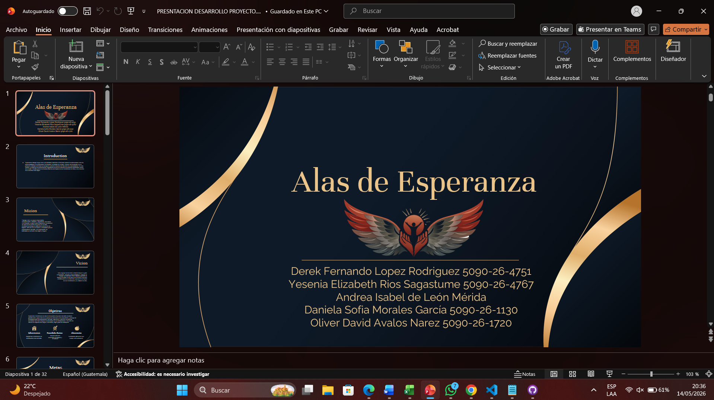
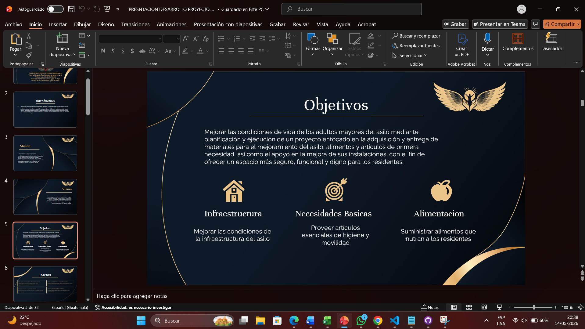
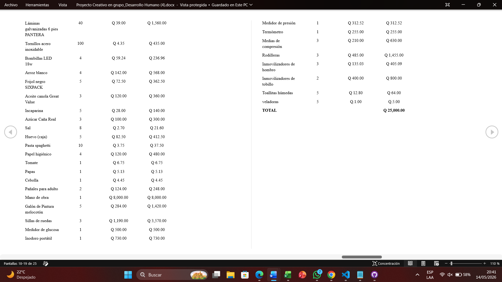

COMPETENCIAS ADQUIRIDAS ESTE SEMESTRE
Fortalecimiento de la Autoestima y Confianza Personal -75%
En lo personal una de las cosas en las cuales mas me ayudo este curso fue a mejorar mi autoestima algo en que he estado trabajando y
pude mejorar gracias a conceptos aprendidos durante el curso.
Responsabilida Financiera -80%
Durante este curso aprendi varios conceptos financieros sobre ahorro ,algunos otros que aunque no sean tan interesantes en un futuro me ayudaran
como planes de retiro y el mismo tan querido y odiado IGSS
Desarrollo de Liderazgo y Toma de Decisiones -65%
Esta es el área en la cual siempre me ha costado ya que yo nunca había sido líder y este año me asignaron como líder en varios
grupos y si bien he tenido errores pero he logrado arreglarlos y defender a mi equipo es algo que todavía tengo que afinar, pero
en lo general considero que desde el lugar donde partía es un buen avance
Responsabilidad y Diciplina en entrega de Tareas -90%
Me ayudo a tener mas diciplina con la entrega de mis tareas la verdad es que siempre he tratado de cumplir con ellas y no parto de
buenas bases con la Disciplina a pesar de ello no me esta costando y es en lo que más adquirí o me ayudo mas este curso
PROYECTOS REALIZADOS
PROYECTO DESARROLLO HUMANO
Proyecto parcial ayudar a un asilo y asi mismo hacer la documentacion correspondiente
LINK DEL VIDEO PENDIENTE

IMAGENES
 |
 |
 |